trapo (n.): Spanish for rag.
Throw one over
your sound.
An audio effect that works like real cloth. Pick a fabric, choose how many layers, and hear your drums, keys or vocals soften, thicken and breathe, the way they do when something is draped over the speaker.
Free during the beta · VST3, AU and CLAP · Mac and Windows
Listen
Press play, then flip TRAPO off and on. Same loop, with and without the cloth. The picture shows what changes.
Turn the big knob
Thickness is TRAPO's main control: from one thin layer of wool to six. Drag it while it plays.
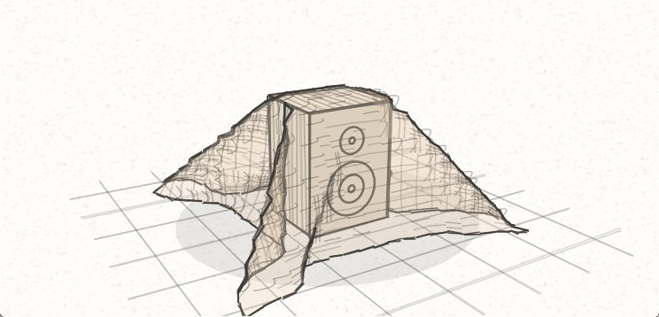
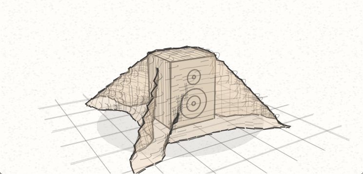
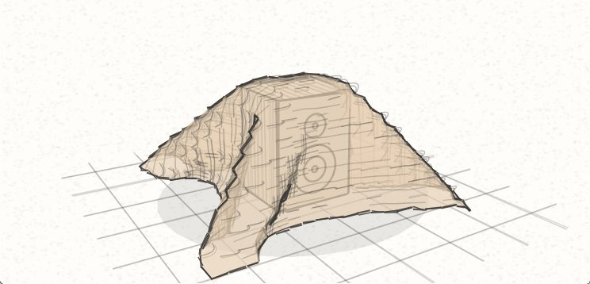
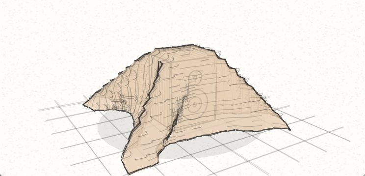
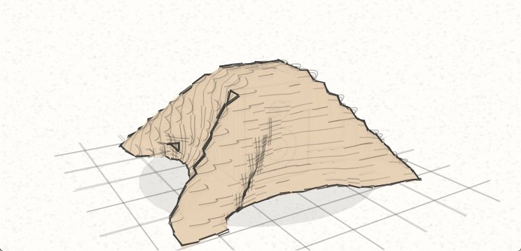
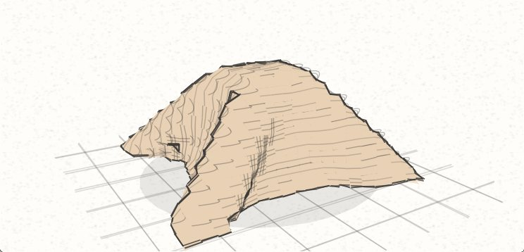
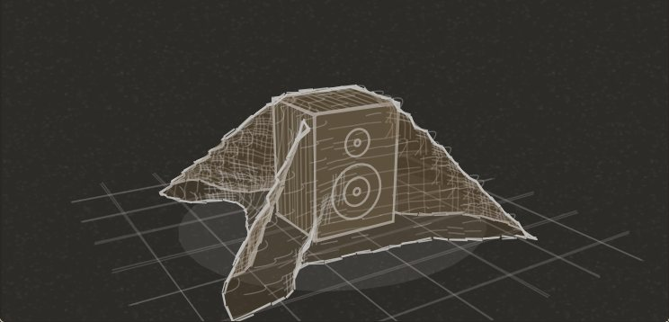
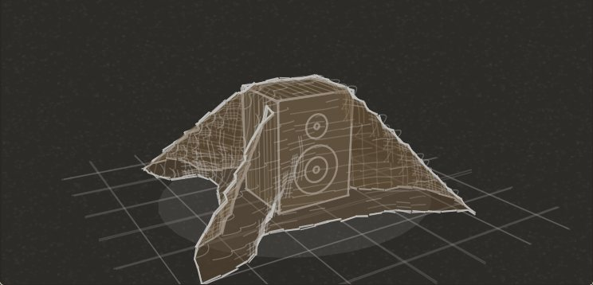
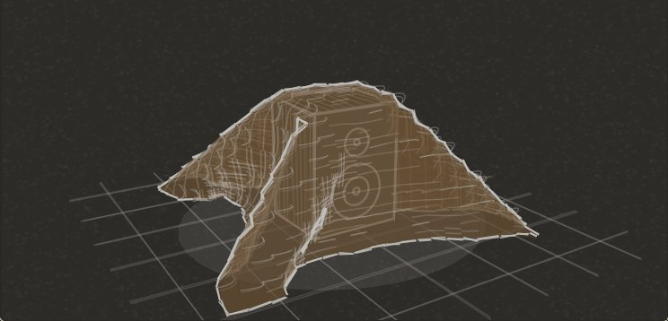
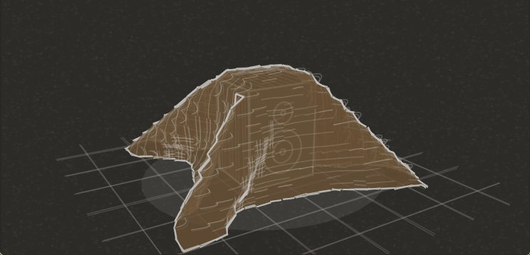
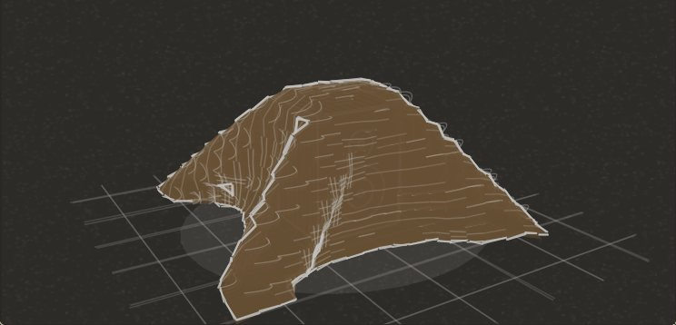
Pick a fabric
Five cloths, each with its own weave, feel and grain. Switch while it plays.
wool
Warm and cosy, with hairy fuzz and a little bounce.
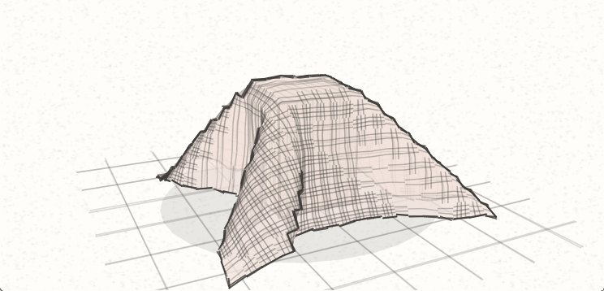


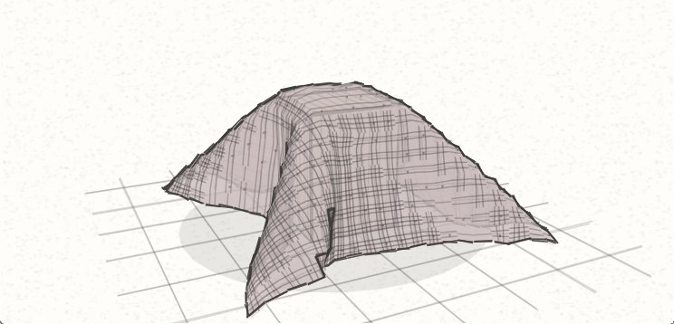
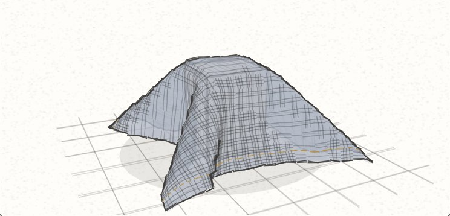


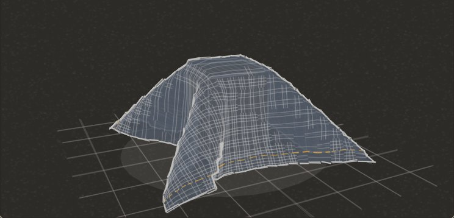
Try the presets
Eight of the 167 on the same beat. Tap one while it plays.
What it does
Thickness
One big knob, from one thin layer to six. The loudness stays put while you turn it.
Touch
Round off every hit or let the tails ring out, each fabric in its own way, without losing level.
Press
A compressor that leans on the cloth like a weight, with the fabric's own give or a clean feel.
Blend and morph
Weave a second fabric in. Keep two complete sounds as A and B and glide between them, automated if you like.
The wardrobe
167 presets for drums, vocals, keys, bass, guitars and mix buses. Rest the mouse on one to hear it.
Share your sounds
Export a preset or a whole folder as a pack. Friends drop the file on TRAPO to add it.
In depth
The sound travels through seven stages, left to right. Each card has its main controls on the front; turn it over for the fine ones.
Every control, every setting, recipes and fixes are in the manual: 17 pages in TRAPO's own look. It's also in the download.
Read the manual (PDF)Night look
Light ink on dark paper, for late sessions and dark DAW themes. Three drawing styles, pencil, ink and cartoon, in both looks. The window resizes from 70 % to 160 %, and every control works from the keyboard and with screen readers.
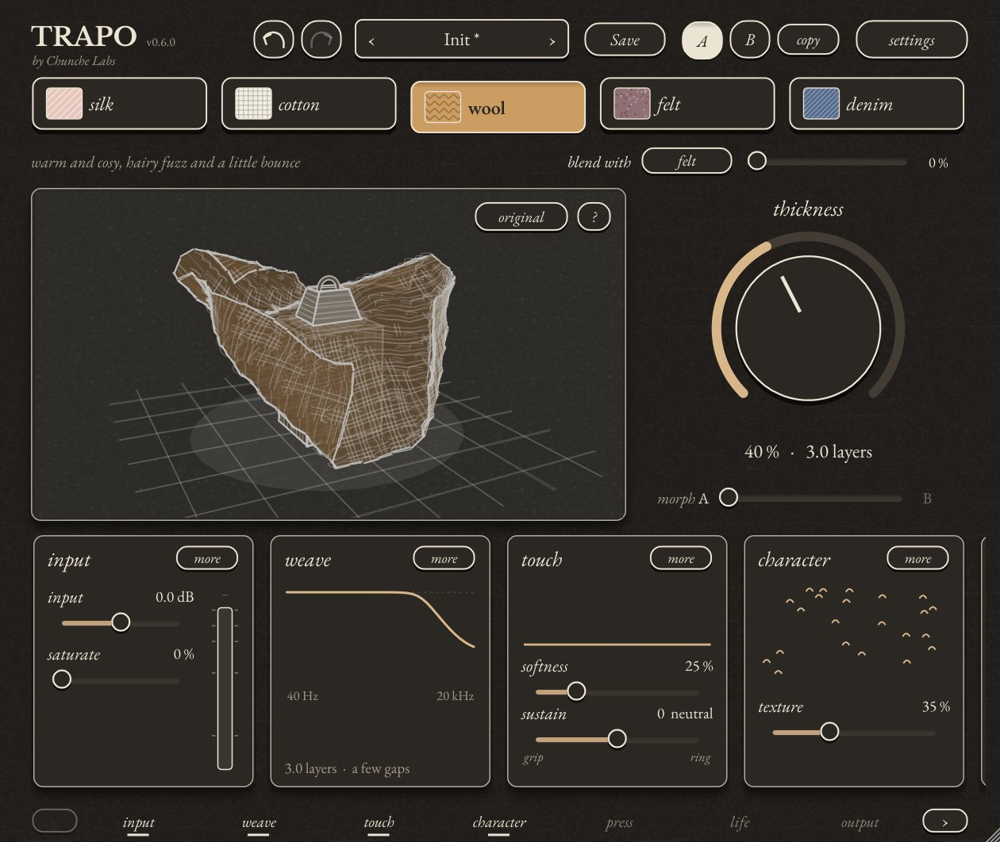
What's new
Version 0.6first public beta · November 2026
- Touch, rebuilt. Held chords and pads stay steady while hits get rounded, and a new keep level switch on the back of the touch card.
- Morph. Glide from sound A to sound B with one slider, automated if you like. Clicking A or B jumps straight there.
- Smarter blend. Click the fabric that's already woven in and the two swap places.
- Smoother. The night look draws as fast as the day look, text no longer gets squashed, and closing the window in Ableton no longer crashes.
- Built-in help. A report-a-problem button with your setup filled in, and a quiet note in the window when a new version is out.
Every version, with downloads: github.com/tavolagos/trapo/releases
Questions
Yes. TRAPO is free while it's in beta, and you can use it on any music, personal or commercial, released or not.
Download it during the beta and you're an early user: when TRAPO becomes paid, you keep getting every future update at no cost. People who join after the beta will pay. In return, tell me what you think, what breaks and what you'd love it to do.
This beta isn't signed with an Apple Developer ID yet. Open System Settings, then Privacy & Security, scroll down and click Open Anyway next to the message about TRAPO. On Windows, if you see "Windows protected your PC", click More info, then Run anyway. It's safe; "Read me first.txt" in the download walks you through it.
Anything that loads VST3, AU or CLAP plug-ins: Ableton Live, Logic Pro, GarageBand, FL Studio, Bitwig, Reaper, Cubase, Studio One and more. There's also a standalone app. Mac: macOS 11 or newer, Apple Silicon and Intel. Windows: 10 or newer, 64-bit.
Open Settings (Preferences on Windows), then Plug-Ins, turn on "Use VST3 Plug-In System Folders" and press Rescan. TRAPO is listed under Chunche Labs.
Yes. Projects and presets keep their exact sound; new options start the way they sounded before. Projects made with TRAPO's working name, Cloth, open with TRAPO too.
In TRAPO, click the ? above the speaker, then "report a problem": it opens an email with your version, computer and DAW already filled in. You can also use the form on GitHub or write to tavolagoss.beats@gmail.com.
Free while it's in beta
The zip has the installer, the manual and a short "Read me first".
Latest version · all versions · macOS 11+ (Apple Silicon and Intel) · Windows 10+ (64-bit)
Join the early-user list
Early users keep getting updates free, even after TRAPO becomes paid. Send one email so I know where to reach you: one short note per release, nothing else.